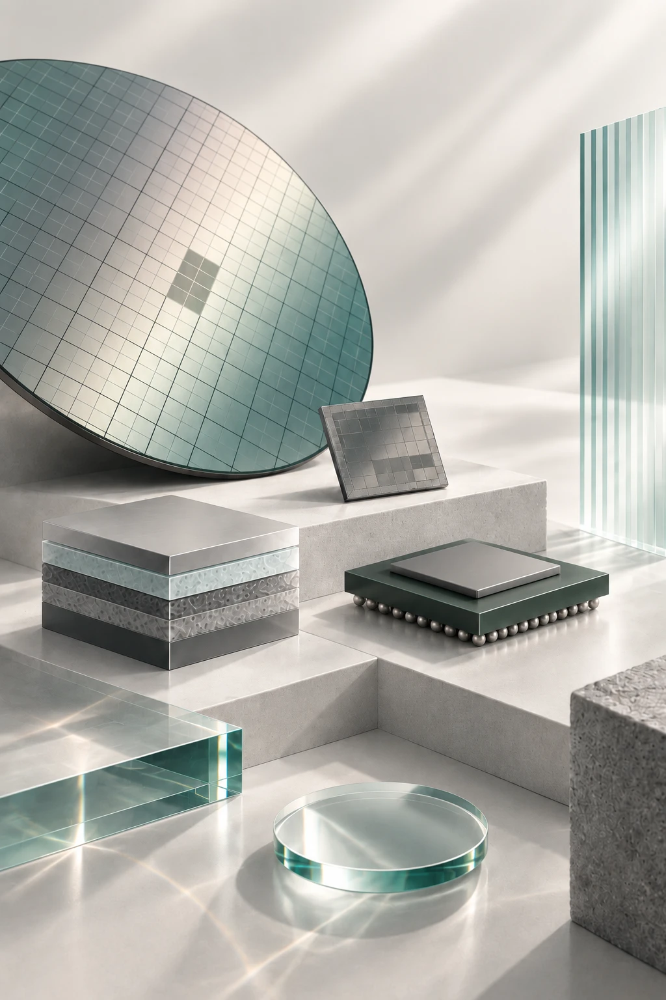

半導體技術研究資料庫
從技術原理一路讀到製程、量產瓶頸與供應鏈。每個重要說法都連回來源，並標明目前成立到什麼程度。
看全景 →
先知道一項技術位在產業的哪一塊，以及各主題目前收錄了哪些內容
深入一個主題 →
從五個研究領域選一個，看它在問什麼、目前答到哪裡
已經有想查的說法？
搜尋
0
條閱讀路徑 · 全景
0
個主題、
0
個已有技術頁 · 更新至
—

形象圖：呈現本資料庫涵蓋的研究對象，包括晶圓與晶粒、材料、封裝與玻璃樣品；圖中配置僅作概念示意，
不代表任何產品架構或組裝關係
。